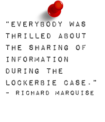

Just because the majority of passengers on the plane were from the United States did not mean that the U.S. was charged with leading the investigation. Pan Am 103 was the first multinational investigation and the FBI's largest investigation ever. The "main players" in the investigation were the U.S., Scotland, Germany, Sweden, Switzerland, Malta and England. Italian and French authorities had minor involvement as well. Because Lockerbie had a considerably smaller police department, Dumfries and Galloway Constabulary was in charge despite all of the much larger agencies from around the world.
This was the first joint investigation with a wide-reaching international scope. There was a long learning process, which involved building trust between the countries. "Cooperation from the various law enforcement agencies started slow," said Frank Duggan, the head lawyer who represented the families of the victims of Pan Am Flight 103. "But it really ended on a high note. There are still very strong bonds between us and the Scottish police."
Richard Marquise, leader of the FBI's investigation into the Pan Am disaster, agreed. "We didn't really quite grasp the concept of teamwork. It took a while to do that," Marquise said. "You had to develop trust. It took a lot of interpersonal skills on the part of everyone on the investigation."

Scottish police did all the searching and most of the forensics. German authorities were very capable and helpful, but "they didn't have the opportunity to do some of the same things that we did," Marquise said. Many countries were most helpful by helping eliminate other suspects.
The FBI had a lot of experience investigating domestic terrorism before Pan Am 103 because there had been a few sporadic attacks, but none of the attacks had taken place on a plane before. "If you look at every single event that has occurred globally where there was an American involved with it, the FBI has at least offered — and is for the most part accepted — to come and help investigate," Marquise said. "The U.K. was more familiar with these types of investigations, given that they had to deal with the IRA."

As the concept of terrorism has become increasingly pervasive, the FBI began establishing more and more joint terrorism task forces accross the nation. On its website, the FBI gives a detailed breakdown of these forces and what they do:
"They are our nation's front line on terrorism: small cells of highly trained, locally based, passionately committed investigators, analysts, linguists, SWAT experts, and other specialists from dozens of U.S. law enforcement and intelligence agencies.
When it comes to investigating terrorism, they do it all: chase down leads, gather evidence, make arrests, provide security for special events, conduct training, collect and share intelligence, and respond to threats and incidents at a moment's notice.
The very first Joint Terrorism Task Force (JTTF) in the nation was established April of 1980 in New York City.
By the mid-1980s, the JTTF began expanding to three squads and an intelligence arm was added. Investigators from several other federal, state and local agencies joined the FBI and NYPD on the task force as it was enlarged.
The task forces are based in 103 cities nationwide, including at least one in each of our 56 field offices. A total of 71 of these JTTFs have been created since 9/11.
Today, the JTTFs include more than 4,200 members nationwide — more than four times the pre-9/11 total — hailing from more than 600 state and local agencies and 50 federal agencies (the Department of Homeland Security, the U.S. military, Immigration and Customs Enforcement, and the Transportation Security Administration, to name a few).
They provide one-stop shopping for information regarding terrorist activities. They enable a shared intelligence base across many agencies. They create familiarity among investigators and managers before a crisis. And perhaps most importantly, they pool talents, skills, and knowledge from across the law enforcement and intelligence communities into a single team that responds together.
The task forces coordinate their efforts largely through the interagency National Joint Terrorism Task Force, working out of FBI headquarters, which makes sure that information and intelligence flows freely among the local JTTFs and beyond.
And here's the final — and most important — thing you should know about these JTTFs: They are working 24/7/365 to protect you, your families, and your communities from terrorist attack."

Early in the investigation, they decided to bring every relevant officer into a meeting and brief them on everything related to the case. "In terms of sharing classified information, those rules have never changed," Marquise said. As an FBI agent, you can't give away classified information, but they have started some Joint Terrorism Task Forces in various large cities that provide clearances to relevant information for local police officers. This is beneficial to the FBI because the local police know the city and community better than the federal police.

According to Marquise, the idea of reporting suspicious activity is now much more prevalent in an average American's mind. He believes people are more alert than ever before, although there are still grounds for improvement.
"We learned an important lesson from Lockerbie, but I don't think it was institutionalized," Marquise said. "September 11th happened, and I think it got a lot better. I think everybody looks and says, 'We never want something like that to happen again.' Lockerbie was looked at as an isolated incident. All of the sudden 9/11 happens, and that becomes such a big deal. And I've often said if we don't learn the lessons of 9/11, we're doomed to repeat them. Law enforcement, particularly in the US, and around the world has gotten much better in terms of collaborating and the mechanisms to share information in real time."